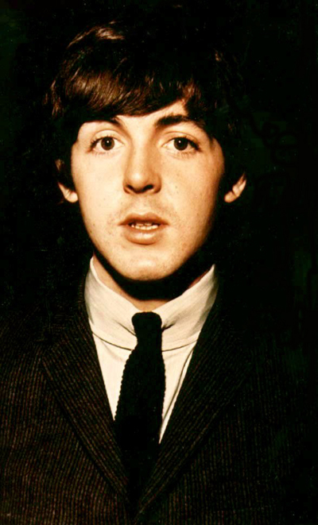
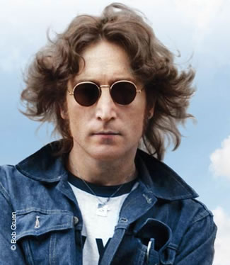
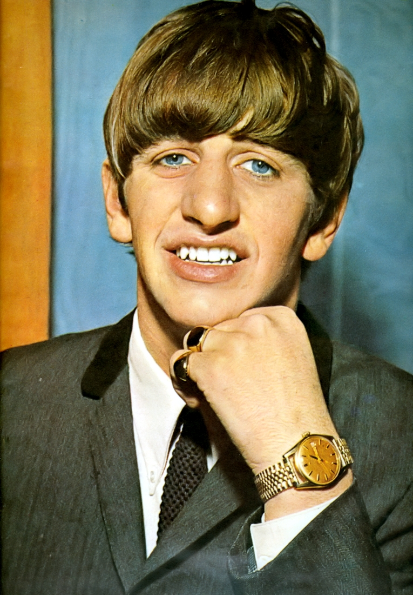
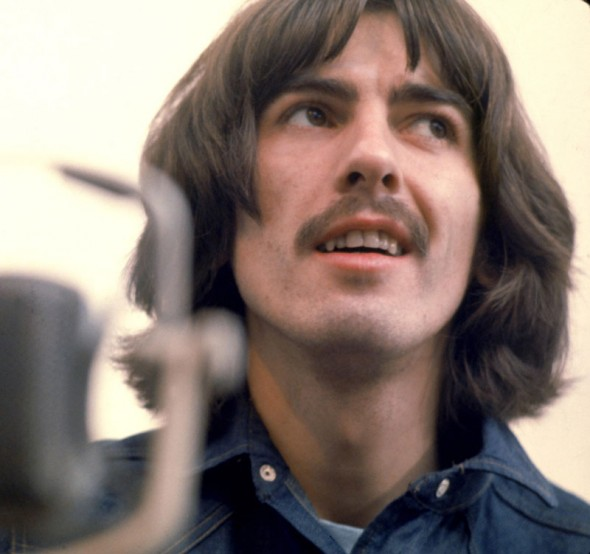

Paul Mccartney
Sir Paul McCartney, KBE (lahir di Liverpool, Inggris, 18 Juni 1942; umur 67 tahun) merupakan penyanyi berkebangsaan Inggris. Ia terkenal sebagai salah satu personil The Beatles. Bersama John Lennon di dekade 1960an, ia membentuk partnership pencipta lagu paling sukses. Ia masih aktif bermusik dan sebagai musikus hingga kini, pendapatannya adalah salah satu yang tertinggi di Inggris. Setelah The Beatles bubar, McCartney bersama istrinya, Linda McCartney membentuk grup musik Wings yang cukup sukses di medio tahun 1970an.
Pada Guinness Book of Records, McCartney tercatat sebagai musisi dan pencipta lagu tersukses sepanjang masa dengan 60 platinum dan penjualan singel 100 juta. Lagu 'Yesterday' yang ditulisnya pada tahun 1964 menjadi lagu yang paling sering dinyanyikan kembali dan diputar di radio Amerika Serikat.

John Lennon
John Winston Ono Lennon, MBE (9 Oktober 1940 - 8 Desember 1980) adalah seorang musisi rock Inggris, penyanyi-penulis lagu, penulis, dan aktivis perdamaian yang mendapatkan ketenaran di seluruh dunia sebagai salah satu anggota pendiri The Beatles. Dengan Paul McCartney, Lennon membentuk salah satu yang paling berpengaruh dan sukses lagu kemitraan dari abad ke-20 dan "menulis beberapa musik yang paling populer dalam sejarah rock and roll". Ia adalah peringkat oleh Billboard sebagai pencipta lagu paling sukses kedua dalam singel sejarah setelah McCartney.
Setelah The Beatles bubar pada tahun 1970, Lennon menikmati karier solo yang sukses dengan album yang diakui sebagai John Lennon / Plastic Ono Band dan lagu Bayangkan dan ikonik seperti "Give Peace a Chance" dan "Imagine".

Ringo Starr
Jr Richard Starkey, MBE (lahir 7 Juli 1940), lebih dikenal dengan nama panggung Ringo Starr, adalah musisi Inggris, penyanyi, pencipta lagu, dan aktor yang meraih ketenaran di seluruh dunia sebagai drummer grup rock The Beatles. Ketika band ini dibentuk pada tahun 1960, Starr milik band Liverpool lain, Rory Storm dan Hurricanes. Ia menjadi The Beatles 'drummer pada tahun 1962, mengambil alih dari Pete Best. Selain kontribusinya sebagai drummer, Starr tampil sebagai penyanyi utama pada sejumlah lagu-lagu Beatles yang berhasil (khususnya, "Dengan Little Help from My Friends", "Yellow Submarine", dan The Beatles versi "Act Naturally") dan sebagai penulis lagu dengan lagu "Don't Pass Me By" dan "Octopus's Garden".
Sebagai drummer The Beatles

Paul Mccartney
George Harrison, MBE (25 Februari 1943 - 29 November 2001) adalah seorang gitaris rock Inggris, penyanyi-penulis lagu dan produser film yang mencapai ketenaran internasional sebagai gitaris dalam The Beatles. Setelah band perpisahan, ia memiliki karir sukses sebagai solo artis dan kemudian sebagai bagian dari Traveling Wilburys.
sebagian besar dari 'lagu Beatles ditulis oleh Lennon dan McCartney, Harrison umumnya menulis satu lagu per sisi dari Help! album dan seterusnya. Pada saat band ini putus, Harrison telah mengumpulkan bahan jaminan simpanan, yang kemudian dirilis sebagai triple diakui dan sukses album All Things Must Pass pada tahun 1970, dari yang datang dua single: sebuah double A-side single.
Harrison memeluk kebudayaan India dan Hindu pada pertengahan tahun 1960-an, dan membantu memperluas kesadaran Barat musik sitar dan Hare Krishna dari gerakan. Ravi Shankar dengan dia mengorganisir sebuah konser amal utama dengan tahun 1971 Konser untuk Bangladesh, dan merupakan satu-satunya The Beatles untuk menerbitkan sebuah otobiografi, dengan I Me Mine pada 1980.
Selain menjadi seorang musisi, ia juga seorang produser musik dan salah satu pendiri dari perusahaan produksi Handmade Films. Dalam bekerja sebagai produser film, ia bekerja sama dengan orang-orang yang sangat berbeda seperti Madonna dan anggota Monty Python. Ia menikah dua kali, dengan model Pattie Boyd pada tahun 1966, dan sekretaris perusahaan rekaman Olivia Trinidad Arias pada 1978 , Harrison meninggal karena kanker paru-paru pada tahun 2001.